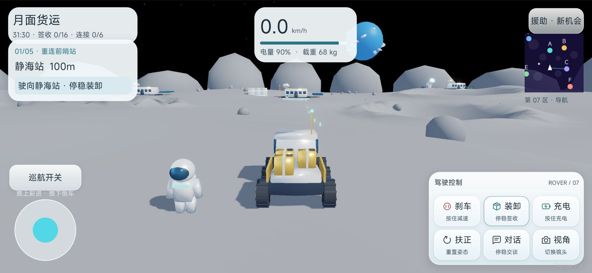
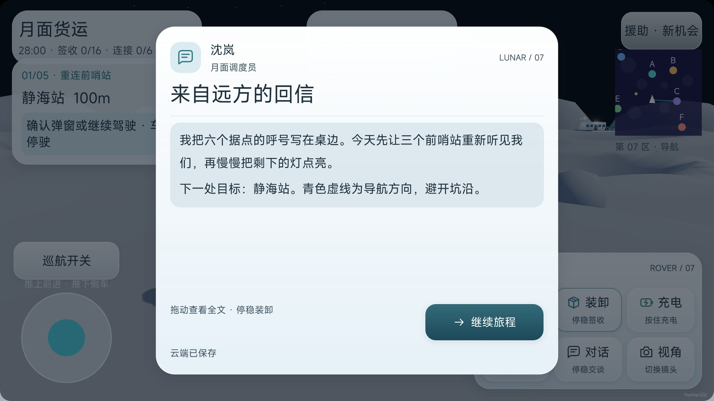

运输目标改变驾驶策略
药品的时限、育苗的易损和结构件的重量带来不同侧重。任务不只替换目的地文字，还让玩家重新权衡速度、安全和补给。
TAPTAP MAKER / 个人 AI 游戏实践
低重力驾驶 / 运输任务 / 叙事探索
驾驶六轮月球货车跨过荒原，把货物和回信送到远方。速度、电量、货物完整度和路线选择，共同决定一次运输能否安全抵达。

巡路导航版已更新；后续修复继续迭代
GAMEPLAY / 核心体验
从委托中了解目的地和货物要求，规划据点之间的路线，控制车速与电量穿过陨坑。到站后停稳装卸、完成签收，并在人物对话中推进章节。六座据点、八位联络员与五章十六件主线货物，将驾驶挑战连接到逐步恢复的运输网络。
IN-GAME CAPTURES / 游戏画面
两张均为 10 月 13 日实际引擎运行截图，展示驾驶与叙事基础；没有将宣传海报或发布后台回执当作游戏截图。
点击任意截图可查看原图。

DESIGN / 规则与取舍
药品的时限、育苗的易损和结构件的重量带来不同侧重。任务不只替换目的地文字，还让玩家重新权衡速度、安全和补给。
太阳能充电、车辆扶正和掉货回收支持继续旅程。巡航只维持油门，转向仍由玩家控制，让便利功能保留路线操作。
雷达、地面箭头和运输提示随任务状态变化，区分前往据点、停稳装卸和完成签收。迭代重点是让玩家知道下一步该做什么。
人物章节对话、签收故事和家书给运输目标补充情感动机。后续加入巡路宇航员与补给掉落，丰富据点之间的旅程。
MY PRACTICE / 项目推进
围绕安全送达整合 3D 驾驶、货物状态、路线导航与章节叙事，通过 AI 协作推进场景和交互实现。持续打磨六站辨识、货物标记、横屏 HUD、雷达与人物对话，让物理系统和任务状态能够被玩家理解。
TAPTAP / 游戏入口
TapTap 页面提供公开介绍与平台支持的试玩入口。平台当前可玩的内容以该页面为准，本页同时记录开发中的后续迭代。